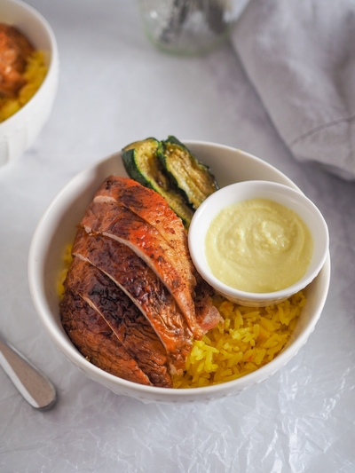

Smoked Beer Can Chicken
Yield: 6 servings
Prep time: 10 minutes
Cook time: 2 hours
Total time: 2 hours and 10 minutes
One of the juiciest chickens I've ever had with very little effort -- smoked beer can chicken cooked in the wooden pellet Z Grill and for the optional sides, smoked zucchini & tomatoes, saffron turmeric rice, and Lebanese garlic sauce (Toum).
For this smoked beer can chicken recipe, I spiced a 3-lb. whole chicken with 1 tbsp each of garlic powder, paprika, coriander, brown sugar, 1 tsp each of salt and pepper, good olive oil and smoked the chicken on top of a can of modelo beer at 350°F for two hours. Was able to make 6 of these plates for meal prep and a big pot of chicken stock using the leftover bones. With the Z grill, dinners have gotten so much easier.
What beer can I use for smoked beer can chicken?
Since you will have to pour out some of the beer, you might as well get something you might enjoy too haha. I tend to like beer that is not too hoppy or bitter. The most popular beer used in smoked beer can chicken is something in the middle like a lager. I chose Modelo for it's crisp and refreshing taste. Other popular beers that you can try are sours, as the acidity can help brighten up the meal.
How do I transfer the beer can chicken to the grill without spilling it?
You can use a baking sheet lined with parchment paper as your surface to make it easy to transport. Alternatively, you can also place the chicken in a large pan to avoid spilling and to help catch the chicken if it tops over.
If I have to lean the chicken against the inside of the grill, will it be okay?
Yes, as you can see I ended up placing the chicken towards the back left corner to prevent it from tipping over.
How to remove the beer can from the chicken?
Place the cooked beer can chicken on a baking sheet. Hold the chicken with paper towels in one hand. Tilt the chicken at an angle and using tongs, remove the beer can. Some of the beer may spill out and that's okay as the tray will catch it.
Ingredients
Smoked Chicken:
- 1 whole chicken (about 3 lbs)
- 1 tbsp of garlic powder
- 1 tbsp of coriander
- 1 tbsp of paprika
- 1 tbsp of brown sugar
- 1 tsp of salt and pepper
- 2 tbsp olive oil
- 1 can of modelo beer
Smoked Zucchini and Tomatoes:
- 4 zucchinis
- 4 tomatoes
- 1 tbsp of olive oil
- 1 tsp of salt
- 1 tsp of pepper
Lebanese Garlic Sauce:
- 1 cup of olive oil
- 1/2 cup garlic cloves (skin peeled)
- 1/4 cup of lemon juice
- 1/2 tsp of salt
Saffron and Turmeric Rice:
- 2 cups of jasmine rice
- 2-1/2 cups of water
- 1 tbsp Lebanese garlic sauce
- 1/2 tbsp olive oil
- 1 pinch of saffron
- 1/2 tsp of turmeric powder
- 1/2 tsp of salt
Directions
Preheat smoker to 350°F.
Remove the pouch of giblets from the chicken cavity and pat dry the outside of the chicken with paper towels.
Rub the chicken with 2 tbsp of olive oil.
Combine 1 tbsp of garlic powder, coriander, paprika, brown sugar, 1 tsp of salt and pepper and rub all over the chicken.
Remove 1/4 of the beer from the beer can.
Place the chicken on top of the beer can, carefully inserting the beer can into the chicken cavity.
Once the smoker reaches 350°F, place the chicken on the rack making sure it does not tip over.
Allow the chicken to cook for two hours or until the internal temperature reaches 165°F.
Remove from the grill and let rest for 10 minutes before carving.
Wash and pat dry the zucchini and tomatoes.
Cut the zucchini in half and slice lengthwise into thick slices.
Toss the zucchinis and tomatoes in 1 tbsp of olive oil and 1 tsp of salt and pepper.
Add the zucchinis and tomatoes to the grill 20 minutes before the chicken finishes cooking for a smoked veggie side dish.
In a food processor or blender, puree the garlic until it is finely minced.
Add 1/4 cup of the olive oil and continue to puree.
Then add a little bit of the lemon juice.
Continue adding the olive oil in quarter cup increments and alternating with the lemon juice until it is all blended into a smooth white paste (about 10 minutes).
Transfer the Lebanese garlic sauce into a clean glass jar with a lid.
Wash and drain 2 cups of jasmine rice using a mesh sieve.
In a medium pot on medium heat, combine 1/2 tbsp of olive oil with 1 tbsp of Lebanese garlic sauce.
Once the garlic becomes fragrant, add a pinch of saffron and 1/2 tsp of turmeric.
Then, add the drained rice and stir until well combined. Season with 1/2 tsp of salt.
Add 2-1/2 cups of water and bring to a boil on high heat with the lid on.
Carefully monitor the pot so that the water does not boil over. Once the rice comes to a rapid boil, turn the heat down to low.
Allow the rice to cook and steam for 30 minutes.